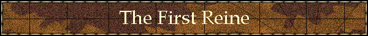

|

|
|
|
The First Reine-de-Course Hidden Talent Ellen Parker
Note: The first Reine to appear in print in 1991 was actually Two Bald. But as the series grew we later went back and expanded that foundation to include Two Bald’s dam, Hidden Talent. Following is the revised story that covers our first Reine and her dam.
Most female families have a certain quality which they pass on to their descendents in one fashion or another. But few have two such obvious qualities as the family of Hidden Talent, which begets not only speed but "sire blood" as well. Woody Stephens trained this daughter of Dark Star, bred by Capt. Harry Guggenheim, and he called her one of the most talented fillies that great gentleman of the turf ever bred. For Guggenheim, Hidden Talent won the 1959 Kentucky Oaks and Ashland Stakes, and placed in the Astoria and Test. It was natural when Hidden Talent retired that she be bred to one of Guggenheim's own stallions, and indeed her first mate was his brilliant, but unsound *Turn-To. That mating produced the minor stakes winner Turn To Talent, who would later become the second dam of leading sire Broad Brush. Hidden Talent's second mate was one of her contemporaries, Capt. Guggenheim's great handicap runner Bald Eagle. Guggenheim had originally hoped that Bald Eagle might win the Epsom Derby for him, but the headstrong colt was found to be ill-suited to Epsom's tricky layout. Once at home, however, Bald Eagle really began to blossom, and he became a marvelous handicapper, winning such important races and the Suburban and Gallant Fox Handicaps and two Washington D. C. Internationals. More than once, the late Woody Stephens called Bald Eagle the best horse he ever trained. When Hidden Talent was bred to Bald Eagle, the result was a pint-sized version of her sire who would race as Too Bald. A marvelous sprinter, Too Bald did not come to hand quickly, but rather matured into her best stride. Various accounts of her racetrack exploits have her "breaking like a scalded cat" and having enough quality that "if she can stretch it out a little more, then Gamely and Dark Mirage are going to have company, because this filly can really move." Too Bald never became a stayer, but during her career she did meet and defeat such outstanding mares as Straight Deal and Gay Matelda (both later major producers). She also gave away weight with no problem, carrying as much as 129 pounds to victory, which must have seemed quite a lot of her relatively small frame. It was weight, in fact, which finally did her in. Trying but failing to carry 131 pounds over a boggy turf course in the 1969 Suwanee River Handicap, Too Bald was obviously in enough distress that she was retired. But her career - and her time in the headlines - was far from finished. Later that year, Guggenheim sold Too Bald and all of his wonderful horses in a dispersal at Keeneland, issuing a statement that his health was the major cause of his decision. He died at his Long Island estate, Falaise, two months later. Guggenheim's sale was a huge success and the sales topper was none other than little Too Bald, who sold in foal to *Turn-To. Bidding opened on her at $50,000 and jumped in heady increments until she was finally knocked down to Charles W. Englehard for $225,000. Unfortunately, Englehard did not live to see any of Too Bald's offspring race. The industrialist died in 1971 and Too Bald's 1973 foal by Vaguely Noble was bred in his wife's name. The colt was considered to be ill-conformed and brought only $25,000 in the 1974 Keeneland summer sale. The buyer was Nelson Bunker Hunt, who owned Vaguely Noble. The portly Texan named his new purchase Exceller, sent him to Europe to race, later returned him to America and the rest is history. The colt won over $1.6 million and 11 Group or Grade 1 Stakes before retiring to stud. Too Bald was on her way. In 1974 Too Bald was sold twice more, to Eugene Cashman in 1974 for $67,000 and again for $1 million to Mr. and Mrs. Franklin Groves of North Ridge Farm. It was North Ridge who would breed Too Bald's wonderful champion son, Capote. Too Bald was named Broodmare of the Year in 1986 for her five stakes winners: champion and leading first-crop sire Capote; multiple Grade/Group 1 winner Exceller; Chef-de-Race Baldski; American Standard; and Vaguely Hidden. She also produced stakes placed My Song For You. It is one of this series' ironies that Baldski was named a brilliant/intermediate Chef-de-Race, since he was siring faster than his sire, Nijinsky II. Rather than naming Baldski, a good but hardly great sire, a Chef-de-Race, it makes far more sense to simply acknowledge Too Bald's role in the equation. Which is why this series came to be in the first place. My Song for You, foaled in 1987, was a three-quarter sister to Capote by Seattle Song and was Too Bald's last foal. She has already produced a stakes placed winner, Minister's Song. As one can see from the accompanying chart, Too Bald does more than affect the amount of speed her sons introduce into their offspring. Daughter Blazon by Ack Ack is developing a nice branch, as are two other daughters, Bald Facts (by In Reality) and Periwig (by Buckpasser). Unfortunately, both Exceller and Vaguely Hidden were sent to other countries, Exceller to Sweden and Vaguely Hidden to Spain. The brutal, unnecessary death of Exceller in a slaughterhouse in 1997 so touched the American Thoroughbred community that there is now an "Exceller Foundation" whose purpose it is to see that tragedies like his do not happen again. While Baldski is dead, he has a good young son in Appealing Skier set to carry on and a proven son in Once Wild already doing well. American Standard has had moderate success, though he has never "caught on", but Capote has proven a very popular sire and has several good sons at stud including the super fast Ferrara, champion Boston Harbor and Grade 1 winner Matty G., while another branch of the family has produced Williamstown, who is bred on the same pattern as Capote. Williamstown's first foals raced in 1998 and produced six early winners including stakes placed Bea Okay. They should blossom at three as he did. The family is deeper than just Too Bald and Hidden Talent, and the best place to start is the fascinating second dam, *Dangerous Dame, a daughter of *Nasrullah and Lady Kells by the Hyperion stallion His Highness. Although a non-stakes winner, *Dangerous Dame possessed some fascinating inbreeding patterns. This mare, a chestnut foal of 1951, was inbred 4 x 5 to The Tetrarch, 5 x 5 to Chaucer, 5 x 5 to Spearmint and 5 x 5 to Polymelus. This unique group of ancestors represent a true cross section of the best of the breed. Polymelus is the sire of Phalaris; Spearmint is the sire of Plucky Liege, the only mare ever to foal four Chefs-de-Race; Chaucer is the sire of Selene, dam of important stallions Hyperion, Pharamond II and Sickle; and The Tetrarch is the sire of Mumtaz Mahal, ancestress of *Nasrullah, *Royal Charger and *Mahmoud. This was a powder keg of a mix, just awaiting the fertile ground of America to work its magic. Dangerous Dame did not just foal Hidden Talent, she also produced her stakes winning full sister Heavenly Body, winner of the now Grade I Matron Stakes. Heavenly Body's branch is responsible for classic placed A Thousand Stars, champion Celestial Storm, River Memories and Demoiselle winner Diplomette. Too Bald's half sister, Turn To Talent, made her major contribution via the Hoist The Flag filly Hay Patcher, dam of multiple Grade I winner and leading sire Broad Brush. Hay Patcher, the second stakes winner from the first crop of champion Hoist The Flag, was bred by Warnerton Farms and ran in the colors of Sycamore Stable. She was sold as a yearling for $70,000, a figure that now seems like a bargain since she went on to become not only a minor stakes winner but a major producer. In addition to Broad Brush, she also foaled stakes winner Hay Halo and the stakes producers Hay Majesty and Miss Sib, who are just now getting started in their producing careers. Both have produced stakes winners by Ferdinand, Up An Eighth (out of Hey Majesty) won the Gala Lil Stakes and is Grade 2 stakes placed and Not Likely won the Tiffany Lass Stakes for her dam, Miss Sib. One of the nicest things about this family is that it is still young. So much more can still happen. Although we returned to the family the first time to repair an oversight, we forsee returning to it again to add younger Reines in the future. But the current Reines from this family are Hidden Talent, Turn To Talent, and of course, Too Bald. We don't know if there is a better way to end this story than by quoting our own first Reine-de-Course story on Too Bald. It sets the tone for the series to follow, and so we repeat it here: No horse lives forever and indeed Too Bald died in 1989 at the age of 25. But great producers tend to take on an aura all their own, becoming legends. And legends do live forever. As in the day of Vullier, there are no mares on the Chef-de-Race list, prepotent or not. As Pocahontas did not stay on any such recorded list, neither probably will Too Bald. But her obvious prepotence poses a question. Ought not we consider making a list of special mares - not using them exactly like Chefs of course - but perhaps for historical reference. They have most assuredly earned the right, and are so immortalized in their own way in "Family Tables." But the special ones - the ones like *La Troienne and Plucky Liege, Mumtaz Mahal and Myrtlewood and yes, maybe even little Too Bald, she of the small frame and large heart, deserve a name of their own. Let us here suggest that we henceforth name them "Reines-de-Course" or Queens of the Turf. After all, could they be less than royalty? HIDDEN TALENT, b. f. 1956 by Dark Star-*Dangerous Dame by *Nasrullah Won Kentucky Oaks (Div. 2); Ashland Stakes. 3rd Test S. Reine-de-Course.
Turn To Talent, 1963 by *Turn-to. Won Pageant H., etc. Reine-de-Course. Hay Patcher, 1973 by Hoist the Flag. New Castle S. Broad Brush, 1983 by Ack Ack. Santa Anita, Suburban H., etc. Leading Sire, 1994. Hay Halo, 1984 c. by Halo. Maryland Juvenile Champ., etc. Hey Majesty, 1982 by Majestic Light. 2nd Harbor Place S. Up An Eighth, 1991 f. by Ferdinand. Gala Lil S., 2nd Barbara Fritchie H., GR 2. Homme de Paille, 1980 c. by *Vaguely Noble. 2nd Prix de l'Esperance, GR 3. Miss Sib,19'87 f. by Ack Ack. Unraced. Not Likely, 1993 f. by Ferdinand. Tiffany Lass S. Hay High, 1986 f. by Highland Blade. Higher Strata, 1990 c. by Afleet. Maryland City S., etc. Turnabuck, 1971 by Buckpasser. Winner. Turnablade, 1977 by Blade. Valdedictory H., 3rd Matron H., GR 2. Cardonessa, 1984 f. by Olden Times. Winner. Lilly's Moment, 1990 by Timeless Moment. New York Oaks. Winter Sparkle, 1983 f. by Northjet (IRE). Winner. Williamstown, 1990 c. by Seattle Slew. Withers S., GR 2, etc. Too Bald, 1964 f. by Bald Eagle. Broodmare of the Year 1986. Barbara Fritchie H. (twice); Bed o' Roses H., etc. Reine-de-Course. Capote, 1984 c. by Seattle Slew. Champion two-year-old colt. Breeders' Cup Juvenile Colts; Leading First Crop sire, etc. Exceller, 1973 c. by *Vaguely Noble. Grand Prix de Paris, GR I, Jockey Club Gold Cup, etc. Vaguely Hidden, 1985 c. by *Vaguely Noble. New Jersey Turf Classic, GR 3. American Standard, 1980 c. by In Reality. Orange County H. Baldski, 1974 c. by Nijinsky II. Gold Coast H. Chef-de-Race. Blazon, 1976 f. by Ack Ack. Winner. Tough Tender, 1982 f. by Bold Bidder. Unraced. D'Hallevant, 1990 c. by Ogygian. Palos Verdes H., GR 3, etc. Bald Facts, 1979 f. by In Reality. Winner. Fortunate Facts, 1984 f. by Sir Ivor. Lady Baltimore H., 3rd Gallorette H.,GR 3. Sharp Factor, 1985 f. by Sharpen Up (GB). Sharpela (GB), 1990 c. by Ela-Mana-Mou. Swiss Derby, GR 3. If Bald Music, 1987 f. by Stop The Music. Moving Van, 1991 c. by Vanlandingham. Miller High Life Cradle S.,etc. Periwig, 1971 f. by Buckpasser. Unraced. Telltale Traces, 1976 f. by Tentam. Winner. Lake Country, 1981 f. by Caucasus. Champion Older Mare in Canada (1985). Matchmaker S., GR 2, etc. My Song For You, 1987 f. by Seattle Song. 3rd Convenience S. Minister's Melody, 1994 f. by Deputy Minister. 2nd Kentucky Cup Juvenile Fillies S.
FAMILY NO. 21-A
|
Copyright © 2001 Ron & Ellen Parker
|